|
|
| sea anemones text index | photo index |
| Phylum Cnidaria > Class Anthozoa > Subclass Zoantharia/Hexacorallia > Order Actiniaria |
| Alicia
anemone Alicia sp. Family Aliciidae updated Dec 2024 Where seen? This strange anemone is sometimes seen on some of our shores, among seagrasses, rubble and reefs. Usually only one is seen. Features: Those seen were 2-10cm. Out of water, it is just a blob. But when submerged, it expands into a beautiful animal. It has long elegant translucent tentacles emerging from a long translucent body column. The tentacles are dotted with small bumps which are probably batteries of stingers. The body column is studded with clusters of large colourful bumps that look like cauliflowers. These are probably also batteries of stingers.
Sometimes mistaken for cerianthids when their tentacles are expanded. Unlike Alicia anemones, cerianthids live in a tube and don't have bumps on their body column. When retracted, may also resemble some kinds of corallimorphs, which tend to occur in clusters of many individuals while Alicia anemones are usually found alone. |
|
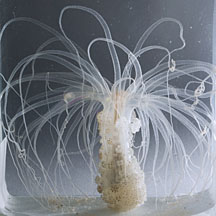 Terumbu Semakau, Nov 12 Terumbu Semakau, Nov 12 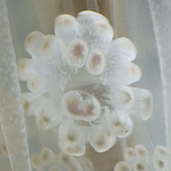 |
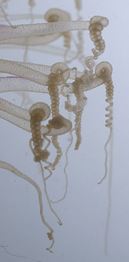 Terumbu Semakau, Nov 12 |
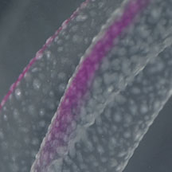 Terumbu Semakau, Nov 12 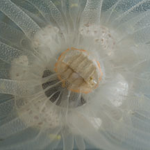 |
| Status and threats: There is inadequate information as at 2024 to make an informed assesment of its conservation status in Singapore. |
*Species are difficult to positively identify without close examination.
On this website, they are grouped by external features for convenience of display.
| Alicia anemones on Singapore shores |
On wildsingapore
flickr
|
| Other sightings on Singapore shores |
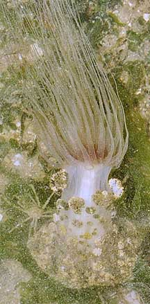 Changi, Jun 09 |
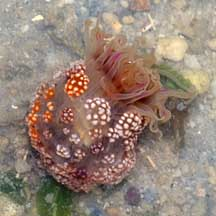 This is what it looked like when we first saw it. 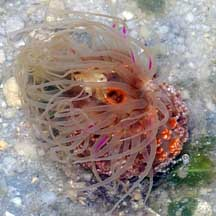 Cyrene Reef, May 08 |
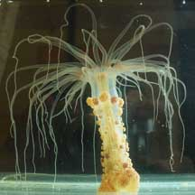 What it looked like after it relaxed in a tank. 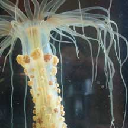 Cyrene Reef, May 08 Photo shared by Tan Sijie on his blog. |
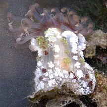 Pulau Hantu, May 19 Photo shared by Jianlin Liu on facebook. |
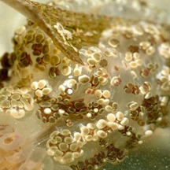 |
||
| Family Aliciidae recorded for Singapore Checklist of Cnidaria (non-Sclerectinia) Species with their Category of Threat Status for Singapore by Yap Wei Liang Nicholas, Oh Ren Min, Iffah Iesa in G.W.H. Davidson, J.W.M. Gan, D. Huang, W.S. Hwang, S.K.Y. Lum, D.C.J. Yeo, 2024. The Singapore Red Data Book: Threatened plants and animals of Singapore. 3rd edition. National Parks Board. 258 pp.
|
Links
Reference
|